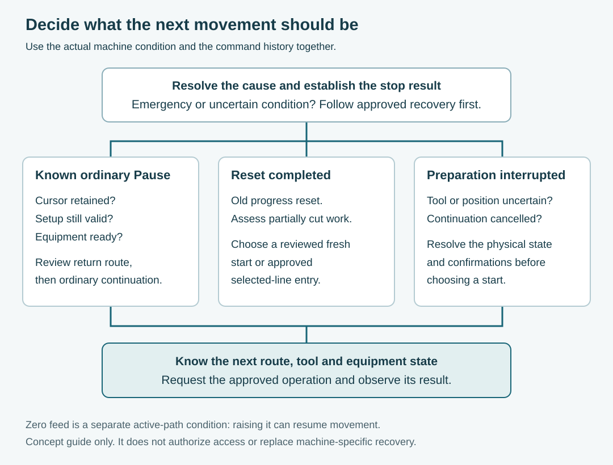

RADONIX · ROUTERXYZAC+TC · CHAPTER 17
Operator Manual · English · 9 October 2026
Pause, Reset and Recovery
Choose the right interruption for the situation, establish what has actually stopped, and understand what the next start will do before allowing the machine to move again.
Expanded draft for review. Software motion commands do not establish every condition required for physical access. Use the machine builder's emergency, access and recovery procedures together with the application behavior described here.
17.1 Choose an interruption by its effect, not its appearance
An interruption is a change in an unfinished operation. You may want a temporary pause, may need to abandon the current run, or may be responding to an abnormal machine condition. These situations can all leave the head looking stationary, but the stored program state and the next permitted action can be very different.
Before an ordinary planned interruption, identify what you want to preserve. If you want to continue a cut from its retained position, Pause is the relevant motion command. If you want the current run stopped and its program progress returned to the beginning, Reset performs that sequence, including when the program is already stopped. Reducing feed to zero is a live main-path feed adjustment with a different resumption behavior.
Learn the differences before you need them
| Action | What it requests | Effect on the next operation |
|---|---|---|
| Pause | A controlled stop of all motion sources; cancellation of pending managed preparation continuations. | Preserves the main-program cursor for ordinary continuation where valid. |
| Reset | A controlled all-motion stop, followed by a main-program reset when admitted. | After reset, ordinary Run begins from the program's initial state unless a new entry is explicitly selected. |
| Main feed at 0% | Controlled reduction of main-path feed to zero. | Raising the feed can resume the retained active path without a new Run. |
| Machine emergency stop | The machine's emergency response; the reviewed software also reacts to its emergency input. | Requires the machine-specific recovery procedure; release is not a restart command. |
The program cursor means the controller's retained place in the prepared program. It can include progress partway through a movement, not just a highlighted line of text. Preserving it can allow a normal paused cut to continue. Resetting it changes the intended starting state, even though the machine's physical position has not changed.
These controls answer different questions
First ask whether you are managing ordinary production or responding to an emergency. If there is an immediate hazardous situation, use the machine's prescribed emergency action; do not work through the ordinary pause/restart choices while the condition develops. This chapter explains software behavior, while the machine's emergency instructions define the response to the actual hazard.
For a routine interruption, ask whether the current cutting progress should be retained or discarded. Then consider the stage of the operation. Pausing during a simple cut is different from interrupting a tool exchange or the approach to the work. In the latter cases, cancelling the pending continuation can leave a preparation sequence unfinished, even if the main-program cursor is retained.
Example: two stationary machines with different next starts
On one machine, the operator used Pause halfway along a cut. On another, the operator used Reset and the following reset completed. Both heads are stationary in the work area. The first may have a valid retained cutting position; the second has returned its program cursor to the beginning. Pressing Run does not mean the same thing in these two situations.
Do not choose by button color, familiarity or the fact that a control contains the word “stop.” The main Reset button discards the retained cursor after stopping. The Pause buttons in the jog and positioning areas preserve it. Learn the delivered control layout and read the operation report to establish what action was actually requested.
Finally, separate stopping motion from permitting access. Pause, Reset and zero feed do not automatically prove that the spindle has stopped, that every output is off or that stored energy has been removed. Follow the approved access procedure before touching the work, tool or machine. A normal software stop is one part of the operating sequence, not the whole physical access decision.
Physical Pause input: An assigned, enabled Pause Switch uses a normally closed circuit: ON is released and OFF requests Pause and blocks motion starts, including at connection. Closing the circuit never resumes the program; release and press Run again. Unassigned/disabled Pause inputs do not apply this interlock.
PLC extensions: Accepted Run, Pause and Reset commands queue their editable PLC programs. Factory Pause and Reset clear both spindle direction/run outputs without timers; the speed setpoint and loader vacuum remain unchanged. This does not confirm spindle standstill. Factory Run does not restart the spindle; follow the machine engineer's restart procedure.
17.2 Use Pause for an ordinary controlled interruption
Pause requests a controlled stop of all motion sources while preserving the main-program cursor. For an ordinary machining interruption, that retained information is what makes continuation different from starting the file again. The controller can retain a position within the current movement, so you do not have to choose a source line merely because the cut stopped between its ends.
Use Pause as part of an understood operating procedure. It is not a promise that every interrupted activity can restart with one click. In particular, it cancels pending managed positioning and tool-operation continuations. Those stages require a separate state check if they are interrupted.
What happens after you request Pause
- The application records the request.
The report identifies a pause intended to stop all motion while preserving the main-program cursor.
- Pending preparation continuations are cancelled.
A queued transition from positioning or tool preparation into machining must not be assumed to remain available.
- A controlled all-motion stop is requested.
Movement decelerates according to the controller and machine conditions. Acceptance of the request is not confirmation of physical standstill.
- You establish the resulting state.
Observe the actual machine, read any warning and identify whether the interruption was an ordinary cut or an unfinished preparation.
| Item | Expected behavior | Operator implication |
|---|---|---|
| Main-program progress | Ordinary partial progress is retained. | Do not select another line or reset if your intention is to preserve this continuation. |
| Other motion | The request targets all motion, including direct axis and path motion. | Do not assume Pause affects only the current cutting line. |
| Tool/positioning continuation | Pending managed continuation is cancelled. | An interrupted preparation needs review before restart. |
| Spindle and outputs | Pause itself is a motion-stop request, not a general shutdown of outputs. | Check actual equipment state before access or continuation. |
| An earlier Reset reset | A later Pause does not cancel the reset already requested by Reset. | Command order matters; read the report if both were used. |
Preserve the evidence as well as the position
Once the machine has reached the required stopped state, note the reason for pausing, the current file, the displayed program region and the current tool. A short interruption can turn into a longer one or involve another operator. Leaving this information clear reduces the chance that the next person assumes a fresh start is intended.
Avoid using Reset, opening another file or selecting a start line during a pause unless you deliberately intend to replace the retained starting state. These actions are not simply ways to tidy the display. The source viewer may show a row that is useful for inspection, but that row is not the full retained position within the movement.
Example: pause halfway along a long contour
The cutter stops partway along a long side of a panel. After the reason for pausing is resolved and the setup is verified, ordinary Run can continue from retained progress. Choosing the visible source line again is a new entry decision and can change the approach. Use ordinary continuation only when the interrupted operation and its machine conditions remain valid.
If you pressed Reset before Pause, do not expect Pause to recover the earlier cursor. The application preserves a pending Reset reset. Wait for the sequence to settle and read whether the reset was accepted. If you cannot establish which command took effect, classify the job as an uncertain restart rather than trying to continue by memory.
Before leaving a paused machine, use the shop's unattended-machine procedure. A retained job and active equipment state should be communicated explicitly. Pause describes a software motion action; it does not by itself establish a machine condition suitable for leaving, servicing or reaching into the work area.
17.3 Use Reset with its following program reset in mind
Reset requests a controlled stop of all motion and schedules a reset of the main program. This second effect is important: Reset is not simply another name for Pause. After the reset succeeds, the retained main-program progress has returned to the beginning. The machine can still be physically located partway through the work.
The main Reset control, the Reset control in the jog area and the other main-window motion Reset control are bound to the same command in the reviewed application. Their location on the screen does not limit their scope. Using one to stop a manual movement can also reset the main program once that program is idle.
Understand the two stages
First, the application cancels pending preparation continuations and requests all-motion stopping. If the controller accepts the request, the report states that stopping is pending. The application then attempts the main-program reset when the main path is idle. During file loading, the reset check is deferred; it does not compete with the loading operation.
The reset concerns the main program. If that program was already idle and another operation was moving, the reset can be accepted while that other operation is still coming to a stop. A “Program reset accepted” message is therefore not a standstill indication for the whole machine. You must still verify the result of the all-motion stop.
| Stage | Meaning | What remains to establish |
|---|---|---|
| Reset requested | The application is asking for all-motion stopping and a later main-program reset. | Whether the controller accepted the stop. |
| Reset accepted; waiting | The stop request was admitted. | Actual motion standstill and the reset result. |
| Main program reset accepted | The main-program cursor has returned to its beginning. | Other motion, spindle and equipment state; the next intended entry. |
| Reset request rejected | The requested stop was not accepted by the controller. | The actual machine condition and the required machine-specific response. |
| Connection is lost during the sequence | The pending application sequence cannot be treated as a confirmed completed reset. | The recovery state after communication is restored. |
Expect a new starting decision afterwards
If you want to run the whole program again after Reset, first check that repeating it is appropriate for the partially machined workpiece. A full restart can repeat cuts, approach already opened areas or perform tool and equipment operations again. Do not treat a fresh start as automatically harmless because the program previously ran without a warning.
If only the uncompleted portion should be run, that requires a deliberate selected-start decision. The highlighted row remaining in the source viewer is not sufficient. The relevant procedure is Chapter 18; it includes the implications of omitted operations and the required entry state.
Example: stopping manual jog after a paused job
A job was paused and the head was jogged. The Pause button in the jog area stops motion while preserving the program cursor. The main Reset button instead requests a program reset after stopping. Choose according to whether the previous continuation should be retained.
After Reset, read the report and make the new start intention explicit. Check the current tool, work reference, actual head location and workpiece condition. If you cannot establish whether reset completed, do not infer it from a zero feed reading or a stationary preview marker. Resolve the program state before another motion request.
Reset remains a motion command. It does not generally clear all equipment outputs or disable every servo. The machine's access procedure determines when you may inspect or remove the workpiece. If the physical condition requires an emergency action, use that procedure instead of treating repeated software Reset requests as evidence that stopping has occurred.
17.4 Reset a stopped program only when you intend a new start
Reset returns the stopped main program to its beginning when the application and controller admit the request. It is a change to program state. It does not physically return the head to the first cutting point, home the machine, remove the current tool or restore the workpiece to its uncut condition.
Use Reset when you deliberately intend to discard the retained continuation and prepare a new start. Do not use it simply because a display looks confusing or a warning has appeared. First establish the reason for the interruption and record the information needed to understand it. Clearing program progress cannot repair a physical or setup problem.
Why Reset can be unavailable
Reset is available while the controller is connected, including during jog, positioning, tool operations and pending starts. It cancels managed continuations and requests a controlled motion stop. Rewinding TP0 waits until the path is idle; during file loading it is deferred until the worker releases the path. The controller can reject a stop or reset request; inspect the report and actual machine state.
When accepted, Reset clears the application's pending explicit start request and reports that the cursor returned to the beginning. The prepared program geometry and work transforms are preserved by the controller reset. That means a reset is neither an instruction to reopen the file nor a new work-origin setup. You must still verify those items before the following Run.
| Question | What Reset does | What still needs a separate decision |
|---|---|---|
| Where will ordinary Run begin? | Returns the program cursor to its initial state and clears the pending explicit entry. | Whether the whole job should be repeated on this workpiece. |
| Where is the head? | Does not command a return movement. | The physical route needed before machining can begin. |
| Is the machine homed? | Does not carry out homing. | Check homing status and use the homing procedure where required. |
| Are the origins correct? | Preserves the prepared path transforms. | Verify them against the actual stock and approved job. |
| Has the fault been repaired? | Does not repair a drive, tool, communication or workholding problem. | Resolve the cause and confirm readiness. |
| Is access permitted? | Does not establish spindle standstill or energy isolation. | Use the machine's physical access procedure. |
Keep three kinds of “zero” separate
A program returned to its beginning is not the same as machine coordinates at zero. Machine zero is related to homing. The work origin is the datum used to place the part's program. A program reset concerns where execution begins. Mixing these meanings can lead an operator to move the head or change an origin when only a program-state decision was intended.
Example: reset while the head remains above the last cut
The main path is stopped and Reset is accepted. The progress display returns to its initial state, but the head is still above the partly machined panel. A later Run may need entry positioning and can repeat the initial job sequence. Before it is requested, review the approach route and whether repeating that work is suitable.
If a later line is required after reset, select it deliberately through the approved selected-start procedure. Do not assume that clicking a line for inspection restores the earlier partial movement. Selecting a line establishes a new entry, while the original paused cursor could contain a more precise position within that line.
After a reset, confirm the actual file, intended entry, current tool and main feed percentage. The reset message confirms the program-state change; it does not certify the next job setup. Treat the next Run with the same pre-run discipline as a first start, including the condition of any work already cut.
17.5 Treat zero feed as a retained active operation
The main-program feed percentage is a live velocity control. Setting it to zero requests a controlled reduction of the main path's feed to zero while retaining its progress. It does not perform the same operation as Pause, and it does not request the main-program reset associated with Reset.
The practical difference is what can cause movement next. While the retained path is active and otherwise able to proceed, increasing feed above zero can resume it without another Run command. A person who sees a stationary head but does not notice the zero setting can accidentally initiate movement by “restoring” the percentage.
Compare the next action, not just the stopped appearance
| Question | Main feed at zero | Pause |
|---|---|---|
| What is affected? | Main-path feed factor. | A controlled all-motion stop request. |
| Is the main program reset? | No. | No new reset is scheduled, although an earlier Reset reset remains pending. |
| Can raising the percentage resume movement? | Yes, for the retained active path when other conditions permit. | It does not replace the new continuation request after the pause has stopped the path. |
| Are preparation continuations cancelled by this action? | The slider itself is not a cancellation command. | Pending managed tool/positioning continuations are cancelled. |
| Does the action establish physical access? | No. | No. |
Allow for deceleration when reducing the percentage. Zero is the requested factor; it is not proof that the head is already stationary. The position display and actual machine condition must be interpreted together, and the spindle may remain rotating. The cutter can still be in contact with the work even after feed has stopped.
The control applies to one kind of operation
Entry positioning and tool exchange use separate movement operations and their configured speeds. The main feed slider does not provide a universal means of slowing or stopping those routes. A zero value beside the main-program feed therefore cannot be used to conclude that every machine movement is inhibited.
Likewise, the jog-feed percentage is a separate manual-motion control. Changing it is not a way to hold the main program. Identify the label and units before touching a value, especially when several movement and spindle controls appear together.
Example: a handover with the feed left at zero
An operator reduces feed to zero and tells a colleague that the machine is “paused.” The colleague raises the percentage before pressing Run, expecting nothing to happen yet. The retained active path can already resume. A proper handover must say that feed is at zero, whether Pause or Reset was also used, and what operation remains active.
Make the intended interruption explicit
If the intention changes from a brief authorized feed adjustment to an interruption that requires investigation, use the appropriate defined interruption procedure and establish its result. Do not leave the situation described only as “the slider is down.” The next operator needs to know the machine state and which action is permitted.
Before raising feed after a zero-feed hold, confirm that the original reason has been resolved, the machine area is clear and the current tool, equipment and workpiece remain suitable. Treat the increase as a possible movement command. Use only the operating conditions approved for the job; reducing feed does not automatically make an unsuitable cutting condition acceptable.
After a separate Reset, zero feed can also explain why a later accepted Run does not produce expected cutting movement. Read the displayed percentage as part of the current state, without assuming that the new Run or program reset has restored it. The correct response is to verify the entire starting condition before changing the percentage, not to increase it as an unexplained troubleshooting experiment.
17.6 Confirm the stop result before making a recovery decision
After an interruption, first establish what actually happened. The application can record a request before the controller has completed the physical stop. A message that a command was accepted means the request was admitted; it does not supply a stopping distance, prove spindle standstill or confirm that every later step has succeeded.
Keep the sequence in order: requested action, acceptance or rejection, deceleration, resulting machine state, and any main-program reset. This order is more useful than asking only whether the Run button has become available again. A button indicates command availability under software conditions; it cannot inspect the workpiece for you.
Use several pieces of evidence
| Evidence | What it helps establish | What it cannot establish alone |
|---|---|---|
| Operation report | Which command was requested, whether it was accepted and the reported ending. | The physical condition of the stock and cutter. |
| Actual motion observation | Whether movement is still visible from the operating position. | Removal of energy or permission to enter the machine. |
| Program state and reset message | Whether retained continuation or a fresh start is being prepared. | Whole-machine standstill, especially when the main program was already idle. |
| Tool indication and exchange messages | The recorded tool and last confirmed exchange stage. | A correct physical tool identity when an exchange was interrupted or state is disputed. |
| Spindle/equipment indications | The reported conditions of the installed equipment. | A universal access condition independent of the machine's instructions. |
| Network and homing state | Whether communication and reference prerequisites are restored. | That the interrupted cut can be resumed without reviewing it. |
The report distinguishes natural completion, a requested stop, an observed axis or coupling fault, and an unknown stop origin. An unknown origin should remain an unresolved condition until investigated. Do not promote it to successful completion because the preview looks nearly finished or the cutter reached the end of a visible feature.
Automatic parking follows confirmed natural completion when enabled. A requested stop, fault or unknown ending does not receive that normal-completion treatment. The absence of parking after an interruption is therefore not a reason to press Run merely to “finish parking.” Decide the required recovery action explicitly.
If the stop request is rejected
Read and retain the warning. A rejected software request cannot be treated as a successful physical stop. Respond according to the actual machine condition and its prescribed controls. If an emergency response is needed, follow that procedure; do not continue troubleshooting the software while assuming the head is held.
Also avoid assuming that a rejected request leaves every software detail unchanged. The application cancels pending managed continuations as part of stopping, and the controller's managed operations can be cancelled before native stop admission succeeds. Even after the immediate machine condition is addressed, review the interrupted preparation and intended next start.
Reading an interruption in the operation report
Capture a real report from an approved training sequence. Show a Pause or Reset request, its acceptance and the subsequent result; if Reset was used, include the reset acceptance. Label the chronological order and explain that acceptance is not standstill. Hide unrelated job or customer information.
Suggested file: assets/images/17-stop-report.png.
Example: a reset message appears before all motion has settled
The main program was idle while another movement was active. Reset was requested, and the main program reset was accepted quickly. This does not prove that the other movement has already finished decelerating. Continue the standstill and equipment checks before taking the next step.
Once the immediate state is understood, decide whether the interruption is a routine paused cut, a reset job, an unfinished preparation or a fault/emergency recovery. The remaining sections follow these different situations. Keeping them separate prevents an ordinary continuation procedure from being applied to a machine whose position or tool state is no longer trustworthy.
17.7 Continue an ordinary paused cut after checking what changed
This procedure applies to a known, controlled pause during ordinary machining. It assumes that the cause is understood and resolved, the same prepared program remains loaded, the retained cursor has not been reset or replaced, and the workpiece and tool setup remain valid. If any of these are uncertain, establish a new recovery plan instead of treating Run as a routine continuation.
Begin with the reason for the pause. A planned observation and a suspected tool failure are not equivalent. If the cutter, stock or workholding may have been damaged or moved, the fact that the controller retained progress does not make that progress suitable for further cutting.
Use a deliberate continuation sequence
- Confirm the interruption.
Use the report to establish that Pause was the relevant action and that no later Reset, Reset, file replacement or explicit start selection changed the intended entry.
- Confirm the resulting machine state.
Wait for the requested stop to finish and check for warnings, incomplete preparation and communication problems.
- Resolve the cause.
Carry out any permitted inspection or correction using the machine's access procedure. If it changes the setup, reassess whether ordinary continuation is still appropriate.
- Check the job and equipment.
Verify file identity, work reference, current tool, compensation, stock security and required spindle/equipment conditions.
- Review the next movement.
If the head has moved away, account for the return route. If it has not, understand where the retained cut will continue.
- Request Run once when ready.
Observe acceptance, any positioning and the actual continuation. A rejected request requires its own investigation.
| Change since Pause | Why it matters | Decision needed |
|---|---|---|
| Head moved manually | Physical position may no longer match the retained work position. | Verify the return route before Run. |
| Spindle or other equipment changed | Already performed instructions may not be repeated by ordinary continuation. | Establish the required state using the approved procedure. |
| Tool changed or replaced | Tool identity and compensation may differ from the interrupted cut. | Review tool setup and restart suitability. |
| Stock or fixture moved | The old program coordinates may no longer locate the same physical work. | Re-establish the setup and assess partially completed work. |
| Program reset, reloaded or new entry selected | The original retained continuation is no longer the intended starting state. | Use a deliberate new-start or selected-start procedure. |
Ordinary continuation preserves progress within the current movement; it does not reconstruct every earlier equipment action. If the spindle was stopped after Pause, for example, do not assume that pressing Run will necessarily replay an earlier spindle-start instruction. The required equipment state must be established as part of recovery. Never continue cutting merely because the movement command is available.
The configured first-cutting-entry option does not turn a normal continuation into a new line selection. The reviewed execution logic preserves the ordinary partial-motion cursor. Selecting a line to “help it resume” changes that intention and requires the more detailed selected-start checks.
Example: a short planned pause with no setup changes
The machine is paused during an approved training cut, the cause is resolved, no head movement or equipment change occurred, and the report confirms no reset. After the normal readiness and area checks, Run requests continuation from retained progress. The operator still watches the first resumed movement rather than assuming acceptance means the cut is already proceeding correctly.
If Run is unavailable, check loading, homing, active tool or positioning operations, a pending stop/reset and program-managed pauses. Do not reset solely to make Run available if preserving the original cut is important. Record the reason and resolve it using the appropriate procedure.
Once cutting resumes, inspect the resumed region according to the job's quality requirements. A pause can leave a visible mark or otherwise affect the work. Successful continuation of the controller does not establish that the resulting surface meets the required finish.
17.8 Review the return route after moving the head away
After a controlled pause, an approved procedure may require moving the head away from the work. The retained program position can remain different from the head's new physical position. Before continuation, the machine may need to return to the retained work position and then hand control back to the main program.
Do not treat that return as an invisible adjustment. It is real movement through the machine space, potentially involving the cutter, holder, stock and fixtures. You need to understand both the retained destination and the route from the present location.
Return to work is different from return to the work origin
The return-to-work operation uses the main path's retained position. A return-to-reference operation uses the work reference instead. These destinations can be far apart. If the interrupted cut was near the far side of a panel, returning to the work origin is not equivalent to returning to the interrupted cut.
When Run encounters a position mismatch, the application can admit return positioning before main-program execution. The return-to-work sequence includes a handoff that can start the main program after positioning succeeds. It must not be treated as a harmless positioning-only inspection command.
| Question | Reason | What to verify |
|---|---|---|
| Was the original program cursor preserved? | A Reset or explicit entry changes the intended destination. | The command history and current start intention. |
| Where is the head now? | The approach begins at the current commanded position. | The actual head location and relevant coordinate displays. |
| Where will it return? | Retained work position is not necessarily the work origin. | The interrupted program region and approved continuation point. |
| Is the full route suitable? | Clearance must cover the head and tool, not just the path line. | Stock, clamps, accessories and any changes made during the interruption. |
| What follows arrival? | The handoff can begin machining. | Required equipment state, feed setting and a clear operating area. |
The reviewed route uses a configured clearance level
If horizontal travel is required, positioning first takes Z to its configured maximum travel coordinate, then travels horizontally at that level, then moves Z to the destination. If only height differs, the route can be a vertical movement. These movements use the configured traverse speed and their own positioning path.
The main-program feed slider does not govern that separate route. Setting it low or to zero is not a guarantee that the return approach will be slow or prevented. Use the positioning procedure in Chapter 9 and verify the actual configured clearance and speed before movement.
Software travel checks do not provide a complete obstacle model. A clamp added during the pause or a tool holder of different length can change the physical clearance without changing the general appearance of the program preview. If the route is not understood or suitable, resolve the setup through the approved procedure before attempting return.
Example: moving away and then using Reset
During a paused job, the head is moved away. If the run-area Reset button is then used, the main-program reset can change what the next Run means. Do not expect the machine to return automatically to the old interrupted cut merely because the file is still open. First establish whether the cursor was preserved or reset.
If return positioning is interrupted, its pending continuation is cancelled. Arrival close to the target or a visually small remaining gap is not proof of a completed handoff. Read the positioning result and reassess the start state. Do not manually finish an uncertain approach and then infer that the controller will recognize it as a successful continuation.
After an accepted return request, remain attentive through arrival and the first resumed movement. Preparation may be complete while the spindle or other equipment still needs its required operating state established. The entire sequence must be suitable for the actual work, not merely geometrically possible for the controller.
17.9 Treat interrupted tool preparation as an unfinished sequence
A tool exchange contains several distinct operations: preparing the equipment, releasing the old tool where required, acquiring the new tool, confirming the grip, applying compensation and withdrawing or returning. An interruption can occur between any of these stages. The result cannot be described adequately as “the program is paused.”
Pause and Reset cancel pending managed tool continuation. Reset also schedules the main-program reset. Cancellation prevents the normal automatic transition from being assumed complete, but it does not undo physical actions already carried out. If the old tool has been released, cancelling the sequence does not put it back in the spindle.
Identify the last confirmed stage
The application updates the recorded current tool at confirmed stage boundaries. After the old tool is released and confirmed, the recorded tool becomes empty. After the new tool is clamped and confirmed, its number is recorded. Compensation acknowledgement and the later return route are separate stages. An interrupted sequence can therefore show the new tool number while further preparation remains unfinished.
| Last observed stage | What may still be unresolved | Required focus |
|---|---|---|
| Approaching the tool station | Exchange movement was not completed. | Head location, tool held and clearance for any recovery motion. |
| Old tool release | Physical release and recorded empty state may not both be confirmed yet. | Actual grip, pocket and latest confirmed report. |
| Empty spindle recorded | The next tool has not necessarily been acquired. | Do not attempt cutting on the assumption that the requested tool is present. |
| New tool recorded | Compensation or withdrawal may still be pending. | Verify the full preparation result before any return to machining. |
| Return route interrupted | The handoff into the main program has been cancelled or not completed. | Review the intended entry and actual head position. |
Use the current tool display as one piece of evidence, not as a substitute for the recovery procedure. If the physical tool and displayed number disagree, reconcile them through the authorized tool procedure. Do not enter the requested number simply to remove the discrepancy on the screen.
Why pressing Run may not help
A program-requested tool change uses a managed pause while the exchange is performed. The ordinary Run command does not bypass that paused operation. After cancellation or failure, the expected continuation may no longer be available. Repeated Run requests do not rebuild the missing confirmation or establish that the tool is clamped.
Similarly, disabling automatic tool change is not a recovery method for an uncertain spindle. That option changes the treatment of program tool requests; it does not establish tool identity or complete an interrupted physical exchange. Keep the intended operating mode consistent with the approved job.
Example: the new tool is visible, but the exchange did not finish
The machine records the newly clamped tool, then an interruption occurs before the return route is complete. Seeing the correct tool number does not prove that compensation and the final positioning sequence have all succeeded. Use the report and tool-recovery procedure to establish the complete state before selecting the next machining action.
A cancelled tool operation and its confirmed state
Use a documented training or Simulation case showing the cancellation message, last confirmed exchange stage and current tool indication. Annotate the distinction between the requested tool and the confirmed current tool. Do not create a dangerous real-machine interruption solely to obtain a screenshot.
Suggested file: assets/images/17-tool-interruption.png.
The practical recovery procedure is in Chapter 11, with compensation and measurement in Chapter 12. If tool identity, grip, magazine occupancy or the appropriate withdrawal route is uncertain, involve the responsible setup or maintenance person. Preserve the original fault information before changing program state.
After the tool condition is resolved, there is still a machining decision: continue retained progress if valid, restart the job, or select an approved later entry. These are separate decisions from getting a tool physically secured. Recheck the partly machined work before choosing among them.
17.10 Recover from an emergency condition without treating release as restart
An emergency interruption is not an ordinary production pause. Use the machine builder's emergency instructions for the actual situation, including how to secure the area, investigate the cause and authorize recovery. The application behavior described here explains the screen and software response; it does not replace the machine's hardwired emergency-stop circuit or its approved recovery procedure.
In the reviewed factory background logic, the emergency input is treated as a normally closed circuit. A healthy closed circuit gives a high input, and the red emergency indication is off. An open circuit gives a low input, and the red indication is on. This indication represents the input condition, not measured standstill.
What the reviewed software requests
When the emergency circuit opens, the background logic requests the controller's motion Hold and clears the spindle run directions and speed output. The controller's Hold blocks new motion and applies the controlled all-motion stopping behavior. The background logic remains involved in equipment interlocks. These software actions complement the machine's actual emergency system.
When the input returns to its healthy condition, the software releases its Hold request. Braking or pending command handling can still be completing. The input lamp can therefore clear before motion admission is available again. More importantly, release does not automatically resume the interrupted movement.
| Observation | Meaning in the reviewed configuration | Do not conclude |
|---|---|---|
| Red emergency indication on | The mapped emergency circuit is reported open. | That all physical movement or stored energy has already ceased. |
| Emergency indication clears | The input circuit is reported healthy again. | That braking has finished or the machine may immediately restart. |
| Run remains unavailable | A motion block, readiness condition or other prerequisite may remain. | That the interlock should be bypassed. |
| Spindle command cleared | The factory logic has removed its run request. | That the spindle is already physically stationary. |
| No automatic motion after release | Release is not a continuation command. | That the recovery is complete or the old program state is automatically suitable. |
Restore conditions, then decide what to run
First resolve the cause using the approved procedure. Releasing a button, restoring a guard condition or acknowledging a message is not the same as understanding why the emergency occurred. Check the machine and work only under the required access conditions, and involve the responsible person when the event may have damaged the tool, shifted the stock or affected position accuracy.
Then establish connection, axis readiness and homing state. Verify the actual tool and its recorded identity, the work reference and the condition of the partially machined part. An emergency during an exchange must include the tool-stage checks from the previous section; it cannot be reduced to resetting the program.
Finally, choose a deliberate new operation. The machine may require re-establishment of its references, a fresh start or a specifically approved selected entry. Do not issue Run just to see whether recovery has finished. Know the expected first movement and equipment sequence before allowing it.
Example: the lamp clears but Run is still unavailable
The emergency input is restored, yet the controller is still completing its stopping state or another readiness condition remains unmet. Repeated clicking or changing settings does not establish readiness. Keep the machine in its recovery process, read the available status and resolve the remaining condition through the approved procedure.
The installed background control program can differ from the embedded factory source because saved control programs are authoritative. The machine supplier must verify the delivered behavior. Operators should report an unexpected emergency response rather than editing control logic, changing input mappings or disabling checks to reproduce the factory description.
There is no universal delay in this manual after which emergency release becomes permission to restart. The decision depends on the actual stop result, the cause, the restored machine condition and the approved recovery. Keep those facts separate from the appearance of a single lamp.
17.11 Re-establish the machine after communication or power interruption
A communication interruption changes what the application can reliably control and observe. Losing the machine network is different from the controller process disconnecting, and both are different from a normal paused cut. Do not assume that reconnecting a cable restores every condition needed to continue the work.
The reviewed main window distinguishes a connected controller from an operational machine network. Link restoration alone does not reopen machine-motion admission. The network must complete its operational recovery, and the axes and other required machine conditions must be ready. A connection indication is therefore one part of recovery, not its conclusion.
Check the levels of recovery separately
| Level | What to establish | Why it is separate |
|---|---|---|
| Physical cause | The cable, power or equipment problem has been addressed under the approved procedure. | A temporary return of communication does not explain or repair the original cause. |
| Controller connection | The application has a valid online controller session. | A session can exist while the machine network is not operational. |
| Operational network | The machine network has completed its recovery. | Link-up alone is insufficient. |
| Axis readiness and homing | All required axes are ready and their homing state is established. | Remapping can clear Home; ready-to-move and homed are distinct conditions. |
| Tool and compensation | The physical tool agrees with its recorded state and compensation synchronization has completed. | A saved tool number cannot inspect the actual spindle. |
| Program and work | The correct prepared job and a suitable restart plan are established. | Neither reconnection nor homing proves that the old partial cut can continue. |
When the controller leaves its online state, the application cancels pending positioning and tool continuations. On a new online transition, it synchronizes compensation associated with the recorded current tool before accepting relevant operations. Allow that process to complete and investigate any reported mismatch or failure. Do not force a machining request while preparation remains unresolved.
Homing may be required again
Controller remapping clears the homing state. The main homed indication covers every configured axis, including the second gantry axis; seeing only X, Y and Z coordinates does not mean all homing prerequisites are satisfied. Use Chapter 6 when homing must be re-established.
Homing itself involves movement and needs a suitable physical setup. A cutter left inside the material, an interrupted magazine approach or a displaced workpiece can make recovery more complicated than a normal morning startup. Establish a permitted recovery route with the responsible person before initiating homing in an unusual machine condition.
After homing, recheck the work origin and the actual stock. A restored machine reference does not prove that the workpiece remained in the same place during the interruption. The same applies to tool identity and compensation. If either the work or tool position is uncertain, ordinary mid-program continuation is not an appropriate experiment.
Example: network indication returns after a cable problem
The cable link is restored, but an axis is no longer homed and Run remains unavailable. The missing readiness is not solved by selecting a later source line. Complete the machine's recovery, re-establish the reference where required and then choose an approved entry for the partially machined part.
Connection restored versus machine ready
Capture a real approved training state showing connection/network information, axis readiness, aggregate homing and any relevant recovery message. Annotate the difference between a connected controller and a fully prepared machine. Do not unplug a live production machine solely to make this image.
Suggested file: assets/images/17-recovery-readiness.png.
After a power interruption or application restart, verify the file and current start intention explicitly. Do not promise that an earlier partial-motion cursor survived. The loaded view, recorded tool and restored settings are useful information, but the actual machine and workpiece determine whether a fresh start or approved selected entry is suitable.
The application does not issue automatic homing or an automatic machining resume merely because presentation of network status has recovered. The next movement requires a deliberate admitted command. Make that command only after the whole recovery sequence has been checked.
17.12 Use a recovery checklist and practise the decisions
A good recovery ends with a clear answer to a practical question: what will the machine do when the next movement is requested, and why is that action appropriate for the present work? The answer must include the actual machine state as well as the program's retained or reset position.
Use the checklist below after the immediate interruption has been handled through the proper procedure. It is a memory aid for ordinary operator decisions, not permission to undertake maintenance or bypass an interlock. If a required fact remains unknown, resolve it with the responsible person before proceeding.
| Check | What you should be able to state |
|---|---|
| Cause and response | Why the operation stopped, which control was used, and how the cause was resolved. |
| Reset result | Whether the requested stop was accepted and the required stopped condition was established. |
| Program state | Whether the cursor is retained, reset or explicitly selected; which file is loaded. |
| Physical setup | Whether the stock, workholding, tool and reference still match the approved job. |
| Preparation state | Whether tool exchange, compensation and positioning completed or were interrupted. |
| Machine readiness | Whether connection, operational network, axes and homing conditions are established. |
| Equipment state | What spindle and auxiliary conditions are required before the next cut. |
| Next movement | Its destination, route, applicable speed control and whether it leads into machining. |
| Work acceptance | Who will assess the interrupted area and whether rework or rejection is required. |

Practise without creating real faults
Use discussion, an approved Simulation exercise or supervised training to practise the decisions. Do not disconnect equipment, interfere with sensors or interrupt a hazardous real-machine stage just to produce an example. The useful skill is explaining the resulting state and selecting the correct procedure.
- Pause halfway through a training movement.
Explain why the retained position can be more precise than its visible line number. Identify what would invalidate ordinary continuation.
- Compare Pause followed by Reset with Reset followed by Pause.
In either case, once Reset has scheduled its reset, a later Pause does not restore the original continuation. Identify the report entries needed to confirm the result.
- Discuss a zero-feed handover.
Explain why restoring the percentage can initiate motion, and state what information the next operator must receive.
- Review an interrupted tool exchange.
Identify the last confirmed stage, current recorded tool and unresolved physical conditions. Explain why Run is not a bypass.
- Review a recovered network indication.
Identify the additional readiness, homing, tool and work checks that remain before a restart decision.
Keep a concise interruption record
A useful record includes the job and file identity, time of the event, last expected operation, command used, full warning, displayed current tool and whether the head or setup was changed afterwards. Include whether a reset or new line selection was accepted. Avoid reducing the record to “stopped and restarted,” which hides the details needed to assess the work.
When handing over to another operator, communicate the next permitted action explicitly. “Paused with the original cursor retained; no setup changes” has a different meaning from “Stopped and reset; approved restart point still to be decided.” If the state is uncertain, say so and identify the unresolved item.
A final self-check
Can you explain why a cleared emergency lamp does not prove standstill, why a correct current-tool number does not prove an exchange finished, and why a reset program does not mean the head returned to its start? If any answer is unclear, return to that section before practising recovery on the machine.
The next chapter, Starting from a Selected Line, covers the deliberate new-entry procedure used when the original continuation is not the intended next operation. Selecting that entry follows the recovery decision; it does not replace the work needed to establish a valid machine and workpiece state.
Documentation basis
Checked against the source available on 9 October 2026. This is a source review, not a live-machine stopping-distance or safety-system test. Installed settings and saved PLC source can differ from factory defaults. Screenshot spaces need images from the delivered machine.
RouterXYZAC+TC/Configuration/Controller/ToolPathLinks.csRouterXYZAC+TC/MainForm.Bindings.csRouterXYZAC+TC/MainForm.Machining.csRouterXYZAC+TC/MainForm.Runtime.csRouterXYZAC+TC/Machining/HeadPositioningCommands.csRouterXYZAC+TC/Machining/ToolChanger/ToolChangerCommands.csRouterXYZAC+TC/Machining/ToolChanger/ToolChangerMacro.csRouterXYZAC+TC/PLCPrograms/Background.plcNT-Interpreter/Controller/RouterExecutionSession.csNT-Interpreter/Controller/RouterToolStartPolicy.csNT-Controller/Core.csNT-Controller/Core.Status.csRouterXYZAC+TC/README.md(machine command availability and recovery notes)